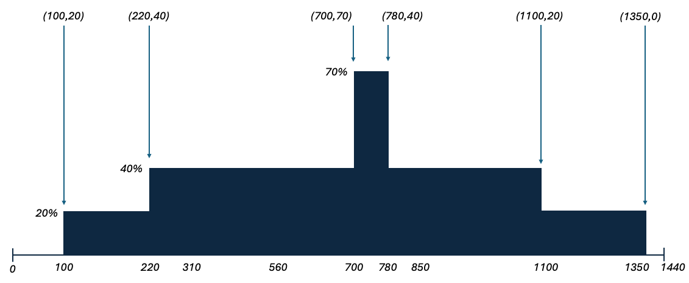

This is a friendly reminder on the class policy regarding the use of GenAI on programming assignments in this course. While you may use GenAI to do the equivalent of looking up known information on the web / in a manual, you may NOT use GenAI to generate the solution to any part of this programming assignment. The purpose of the assignment is to practice your problem solving and programming implementation skills on your own. If we find that you have copied significant code generated by AI for this programming assignment, this will be considered an honor violation.
You have been hired by the Data Synthesis Association (DSA), who needs you to analyze resource usage on its various servers and produce visualizations for engineers that can help them make decisions about how to be more efficient.
The DSA has many customers who each have large amounts of servers, devices, and such on their networks. Each device has usage patterns that are given to you and the company is asking for you to write a program that computes several things about the data. First, some more information about the input:
Given a list of devices, and usage periods for each individual device, the company wants you to write a program that computes the following for them:
Consider the following devices and usage periods:
There are three devices: Server1, Server2, and Server3. The usage periods are shown, color-coded by specific server. Server1 has three different usage periods but Server2 and Server3 only have one each. The graph that the company wants you to compute is shown in the output figure below.

Note that the company doesn’t need you to print the image of the graph. They only need the points at which the maximum changes. So for this example, you would print (100, 20)(220, 40)(700, 70)(780, 40)(1100, 20)(1350, 0). Each of these points represent a minute in which the maximum usage device changes and the new maximum load starting at that point. If there is a non-zero usage at minute 0, you should report that as you first change in your output.
In addition, the company wants the server that had the maximum/minimum number of minutes as the maximum load device. In this case:
So, you should report Server2 as being the highest load device for the longest amount of time and Server3 for being the highest load device for the least amount of time.
There is only (and exactly) one test case per file.
The first line of the input file will contain the total number of devices d that the client has, where 1 ≤ d ≤ 104, followed by a space, followed by u the number of usage periods between all of those devices (1 ≤ u ≤ 106).
The next d lines will list the names of the devices in an arbitrary order.
The next u lines will list the usage periods one at a time. Each usage pattern will be four space-separated values: The name of the device, start time 0 ≤ s ≤ 1440, finish time 0 ≤ f ≤ 1440, and usage load 1 ≤ w ≤ 100. It will always be the case that s < f.
For each test case, output the list of points that trace along the silhouette of usage periods in order from left to right (see example above for detail). Use the format in the example below. There should be one space between each point (it’s fine if there is an extra space at the end of that line). On the next line, name the single device that was at the largest load for the most minutes followed by a space followed by the number of minutes this device was the maximum load device. On the next line do the same but for the device with the fewest minutes as the max load device. If there are any ties, report the device that reaches the maximum / minimum number of minutes earliest in the day.
3 5
Server1
Server2
Server3
Server1 1000 1350 20
Server1 100 310 20
Server3 700 780 70
Server2 220 1100 40
Server1 560 850 20
(100,20) (220,40) (700,70) (780,40) (1100,20) (1350,0)
Server2 800
Server3 80
We are providing skeleton code for this assignment. You should start with pa2.py or PA2.java. This code only reads in the input described above.
Your first task should be to find the points along the silhouette of usage periods. In order to do this you should use a divide and conquer approach. You do NOT need to pre-sort the usage periods in order for this to work. You should:
The trickiest part of this algorithm is how to actually merge two sets of points that represent the silhouette of two different portions of the usage periods. The two recursive calls should return a list of silhouette points in sorted order from smallest x-coordinate to largest x-coordinate. Let’s call these leftSol and rightSol. Recall that each set of points is a list of x-coordinates and heights. You can merge these by doing the following:
Once you have the silhouette points being returned correctly, then think about how to update your code to also keep track of which device is at the maximum at each step. Good luck!
The submission system can handle four different programming languages, although only two have skeleton code provided (Python and Java). For each programming language, the name of the submitted file is listed below (you have to have it named that exact name, else it will not compile properly). If you want to program in a different language, email the course email at least three days before it is due (as we have to reconfigure the autograder).
You will submit your completed source code file to Gradescope. There will be a small set of acceptance tests that are NOT COMPREHENSIVE. These acceptance tests are the test cases in the example.in file. It’s up to you to comprehensively test your code. The acceptance tests just verify that you are reading the input correctly and providing the expected output.
Note that when you submit, Gradescope will report your grade as “-/10” or “0/10” – that’s a quirk of Gradescope, and is because the grading tests have not been run (and won’t be run until after all submissions are in). You can look at the results of the individual test cases to see how your program worked